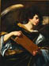
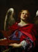
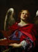

From
the collection
 

Simon
Vouet
Angels with an Attributes of the Passion, the Superscription from
the Cross
About 1612-1627
Oil on canvas
H.41-1/16 x W.30-15/16 in.
The John R. Van Derlip Fund
The
Institute's two angels probably date from Vouet's Italian period (1612-27).
Sumptuously robed in red and blue, one of them carries a pitcher, tray,
and cloth, a reference to Pontius Pilate's symbolic washing of his hands
to absolve himself of responsibility for Christ's condemnation and crucifixion.
The other angel, in green and tan, holds the tablet from Christ's cross,
inscribed "Jesus of Nazareth, King of the Jews" in Hebrew,
Greek, and Latin.